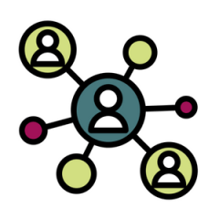

We want you and your community to be able to live life to the full.
That's why finding ways to prevent mental health problems is at the
heart of what we do.
Mental health information and advice
Our mental health information and advice
is based on evidence and the lived experiences of real people.
Find out how to look after your mental health and
help prevent mental ill health from developing.
Programmes
Testing and evaluating the best approaches to improving mental
health in communities and rolling them out as widely as possible

Research
Publishing studies and reports on what protects mental health as well
as the causes of poor mental health and how to tackle them.
Policy and advocacy
Proposing solutions and campaigning for change to address the underlying
causes of poor mental health.
Support our work
Donate this Christmas
Help us support young people before they reach crisis point.
Events and fundraising
From running a marathon to showing your support with a green ribbon,
holding a bake sale to sharing your personal experience of mental
health, there's something for everyone.
Current highlights
Mental health awareness week
Cost of living and mental health
You and your mental health still matter in this christmas
Our best mental health tips
Personal stories
Rhoda's story: Someone to listen
As an asylum-seeker at a young age along with her family,
Rhoda talks about her feelings of loneliness and the effects of culture
change when she arrived in the UK. She has support and love from her husband and
children and went to university, as well as joining volunteer groups that help other asylum-seekers.
Dean's story: Big steps forward
Dean tells us how, even though he was surrounded by a full life and loving family, being furloughed during
the pandemic his feelings of loneliness started to grow and his mental health "took a hit".